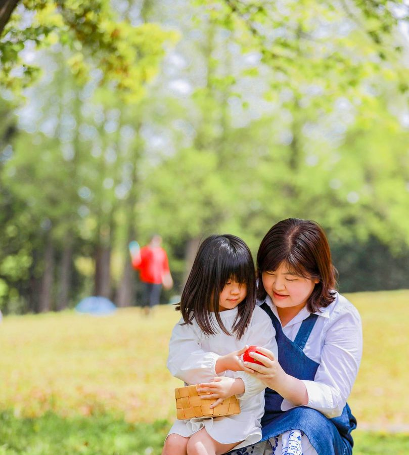
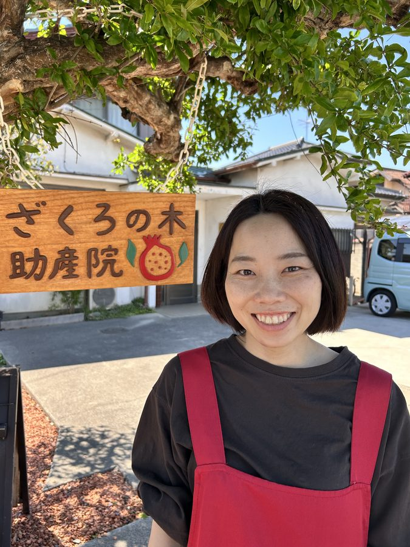
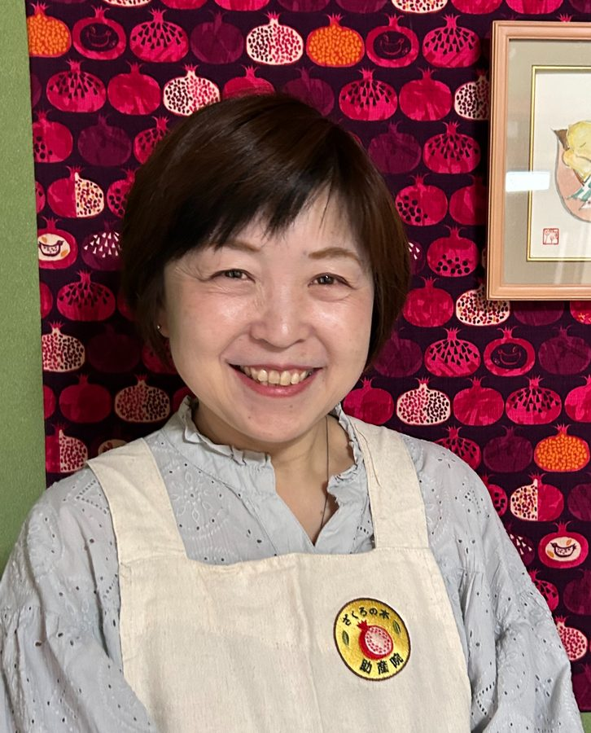
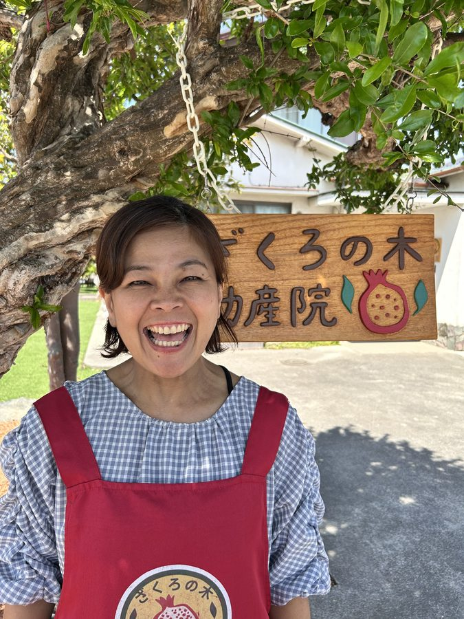
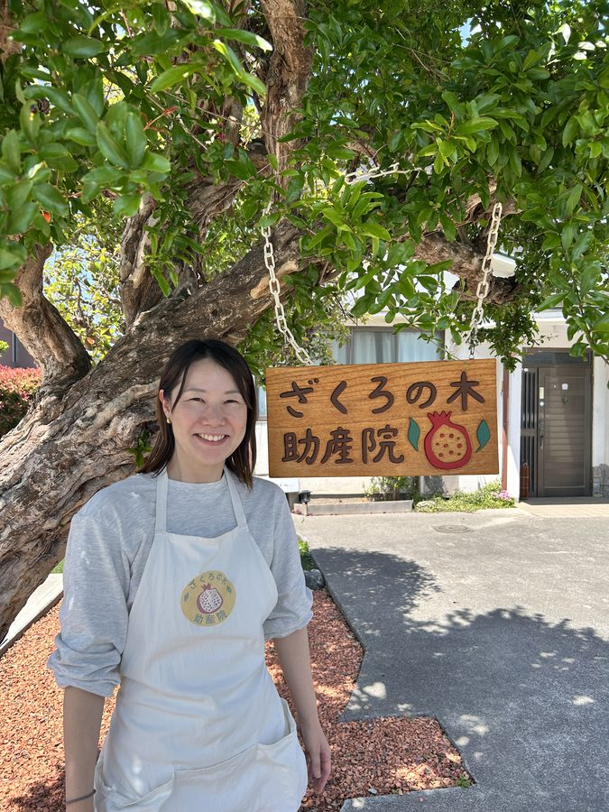

お住まいの市を選ぶ
7つの自治体から産後ケアを委託されています。市を選ぶと、利用条件と申請先をご案内します。
久喜市
生後4か月まで
加須市
生後1年まで
さいたま市
LINEで直接予約
杉戸町
生後1年まで
古河市
宿泊型のみ
宮代町
生後1年まで
幸手市
生後1年まで
その他・自費の方
対象外でもご利用可
申請・審査には日数がかかります。まずはLINEでご相談ください。
ご利用までの流れ
お産も産後ケアも、はじまりはLINEでのご相談から。
1
LINEで相談する
お産は妊娠中期ごろまでに、産後ケアは利用したい月の1〜2か月前が目安です。
2
面談・申請
お産は妊婦健診と面談で受け入れを確認します。産後ケアはお住まいの自治体へ申請を（さいたま市は当院へ直接）。
3
ご予約の確定
お産は36週までに予約金をお預かりして確定。産後ケアは日程が決まりしだいご連絡します。
古民家の助産院
築60年の古民家を、少しずつ手を入れて整えました。「落ち着く」「時の流れが止まっているよう」。ゆったりと、身体と心を休める時間になりますように。
助産院ごはん
できる限り、体調や体質に合わせて。一食ずつ、心を込めておつくりします。
チームで、お母さんを支えます
助産師・保健師・看護師・保育士など、さまざまな専門職が関わっています。

院長・助産師
高田 百香
「私が産む」「私が決める」に寄り添います。2022年、久喜市栗橋に開業。
木村
助産師
田屋
助産師
青柳
助産師

小椋
助産師

田沼
助産師

菅原
助産師
高橋 智恵
助産師
長沼
助産師
青木
助産師
鈴木
保健師
水井
看護師
岸本
看護師

梨本
保育士
斉藤
保育士
中村
保育士
田中
サポート
場所と時間
住所
〒349-1103
埼玉県久喜市栗橋東1丁目19-7
埼玉県久喜市栗橋東1丁目19-7
診療時間
月〜土 9:00–17:00
完全予約制
完全予約制